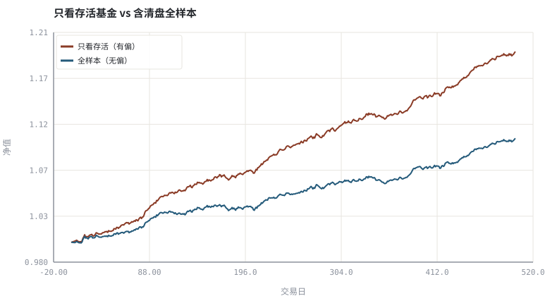
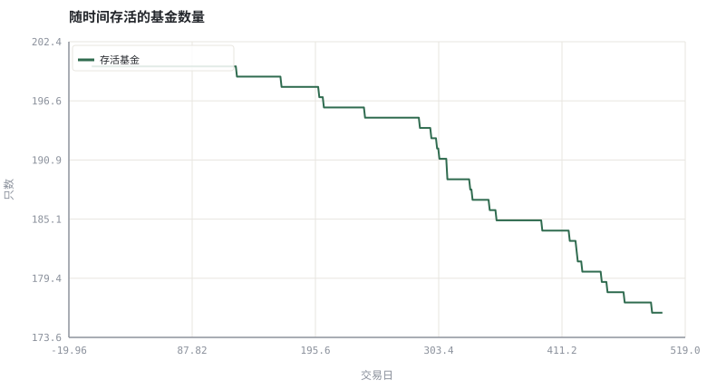

第 25 章数据管道：对齐、公司行动与幸存者偏差
回测里最贵的 bug 不在策略，而在数据：看不见的样本已经替你把收益抬高了。
本章位置：第 24 章给出评估协议，本章给出支撑协议的数据层；第 26 章 · 事件驱动回测引擎：从信号到成交 在此基础上实现事件驱动回测引擎。
数据仓库里的 DELETE FROM funds WHERE status='liquidated' 会让回测自动获得前视能力。正确做法是软删除 + as_of 字段，让查询条件写成 as_of <= t。
- 能描述一条 point-in-time 数据管道的各个阶段。
- 能解释幸存者偏差如何抬高基金/指数回测收益。
- 能处理停牌、退市、拆股与成分股历史变更。
- 能为数据快照写明版本、可用时刻与来源。
§知识点地图
每个知识点都配了 1～2 个扩展学习链接；本章完整资源清单见 扩展学习。
| # | 知识点 | 扩展学习 | 状态 |
|---|---|---|---|
| 1 | point-in-time 快照 | Survivorship bias · Adjusted closing price | 正文已覆盖 |
| 2 | 数据版本与可用时刻 | Survivorship bias · Adjusted closing price | 正文已覆盖 |
| 3 | 公司行动对齐 | Survivorship bias · Adjusted closing price | 正文已覆盖 |
| 4 | 停牌与退市处理 | Survivorship bias · Adjusted closing price | 正文已覆盖 |
| 5 | 成分股历史 | Survivorship bias · Adjusted closing price | 正文已覆盖 |
| 6 | 幸存者偏差 | Survivorship bias · Backtesting | 正文已覆盖 |
| 7 | 前视偏差 | Survivorship bias · Adjusted closing price | 正文已覆盖 |
| 8 | 可复现的数据契约 | Survivorship bias · Adjusted closing price | 正文已覆盖 |
§25.1一条可信的数据管道
- 采集：行情、净值、财报、公司行动、指数成分，各带发布时间与来源。
- 对齐：统一交易日历、时区、币种；缺失值显式编码为「未成交 / 未披露」。
- 版本化：每条记录带
as_of（何时可知）与effective（何时生效）。 - 快照：回测只读取
as_of ≤ t的数据，禁止读取后来修订过的版本。 - 校验：复权不变式、价格非负、成分股权重和为 1、无未来时间戳。
第 06 章处理了价格口径，本章处理时间口径：财报会被追溯修订，指数成分会被回溯调整，基金清盘后数据常被从数据库里删除。三者都会让历史回测「自动变好看」。
§25.2幸存者偏差是可以量化的
偏差 = E[r | 存活到期末] − E[r | 全部样本（含清盘）]
若表现差的基金被清盘并从历史库里移除，那么「用今天还活着的基金回测过去」等价于提前删掉所有失败路径。这不是小误差，而是对收益分布的条件化裁剪。
§25.3把数据契约写进代码
建议每个数据集都配一份 manifest：来源 URL、拉取时间、字段 schema、复权方式、公司行动版本、缺失语义与校验和。回测启动时打印这份 manifest，让每次实验都能被第三方复跑。这与软件工程里的依赖锁文件是同一个思想。
§Python 分析实例
实验 25-1 · 基金清盘造成的幸存者偏差
#!/usr/bin/env python3
# -*- coding: utf-8 -*-
"""合成 200 只基金，差的被清盘；比较「只看存活基金」与「含清盘全样本」的指数收益。
数据为合成数据或模型示意，仅用于教学，不构成投资建议。
"""
from __future__ import annotations
import math
import pathlib
import random
import statistics
import sys
sys.path.insert(0, str(pathlib.Path(__file__).resolve().parents[3] / "tools"))
from chart import Chart, candlestick, heatmap, BLUE, RED, GREEN, AMBER
FIG = pathlib.Path(__file__).resolve().parents[1] / "fig"
FIG.mkdir(exist_ok=True)
random.seed(7)
# ---- 参数区 ----
N_FUNDS, N_DAYS = 200, 500
ANN = 252
SIG = 0.012 # 日波动
KILL = 0.65 # 净值跌破该比例即清盘
LIQUID = -0.05 # 清盘时的额外损失
# ---- 计算与作图 ----
rng = random.Random(7)
funds, alive_by_day = [], [0] * N_DAYS
for _ in range(N_FUNDS):
mu = rng.gauss(0.0002, 0.0004) # 管理人能力异质
v, row, alive = 1.0, [], True
for t in range(N_DAYS):
if alive:
r = rng.gauss(mu, SIG)
v *= (1 + r)
if v < KILL:
r += LIQUID
alive = False
else:
alive_by_day[t] += 1
row.append(r)
else:
row.append(0.0) # 清盘后资金回到指数（简化）
funds.append((row, alive))
survivors = [p for p, a in funds if a]
biased = [statistics.fmean(p[t] for p in survivors) for t in range(N_DAYS)]
unbiased = [statistics.fmean(p[t] for p, _a in funds) for t in range(N_DAYS)]
def curve(rets):
v, out = 1.0, [1.0]
for r in rets:
v *= (1 + r)
out.append(v)
return out
cb, cu = curve(biased), curve(unbiased)
cagr_b = cb[-1] ** (ANN / N_DAYS) - 1
cagr_u = cu[-1] ** (ANN / N_DAYS) - 1
c = Chart(FIG / "25-survivorship.svg", "只看存活基金 vs 含清盘全样本", xlabel="交易日", ylabel="净值")
c.line(range(N_DAYS + 1), cb, RED, label="只看存活（有偏）")
c.line(range(N_DAYS + 1), cu, BLUE, label="全样本（无偏）")
print("净值图:", c.save())
f = Chart(FIG / "25-funnel.svg", "随时间存活的基金数量", xlabel="交易日", ylabel="只数")
f.line(range(N_DAYS), alive_by_day, GREEN, label="存活基金")
print("存活图:", f.save())
print("期初=%d 期末存活=%d | 有偏年化=%.2f%% 无偏年化=%.2f%% 偏差=%+.2f 个百分点" %
(N_FUNDS, len(survivors), 100 * cagr_b, 100 * cagr_u, 100 * (cagr_b - cagr_u)))操作：把 KILL 改成 0.0（永不退市），观察两条曲线是否重合；再收紧到 0.85 看偏差放大。 预期与判读：存活样本池随时间缩小；只用「今天还活着」的基金回测，年化收益被系统性抬高。这与第 24 章的选择性剔除是同一类错误，只是发生在标的物维度而非时间维度。
改参数看趋势：把 LIQUID 改成 −0.20（清盘损失更大），有偏与无偏的差距会进一步扩大。 文件位置：part5/25-data-pipeline/code/25-survivorship.py


代码块右上角可一键复制；仓库里的 code/*.py 由 tools/extract_code.py 从这些代码块自动抽取。脚本只用标准库、固定 random.seed(7)，运行后写出 fig/*.svg；批量运行用 ./tools/run_python.sh。
§本章参考资料
按本章知识点挑选的精读资料；更多检索入口见 扩展学习。
Survivorship bias
百科 · 参考资料只看存活基金/成分股导致的虚高收益
怎么用：幸存者偏差的定义与经典案例https://en.wikipedia.org/wiki/Survivorship_bias
Adjusted closing price
百科 · 参考资料前复权/后复权与公司行动处理
怎么用：公司行动与复权口径https://en.wikipedia.org/wiki/Adjusted_closing_price
§常见误区
- 用当前指数成分股回测十年前（成分股幸存者偏差）。
- 使用被追溯修订过的财报数据。
- 把停牌日填成 0 收益，人为降低波动。
- 前复权序列更新后仍沿用旧回测结果，未重新生成。
§习题与思考
- 写出一份数据 manifest 的字段清单，并说明每个字段如何被校验。
- 在示例里加入「清盘基金收益继续按指数计」与「按 0 计」两种口径，比较差异。
- 举一个「财报追溯修订」导致前视偏差的具体路径。
§扩展学习
以下资料按本章知识点挑选，可直接精读或对照真实数据；知识点地图里每一条也挂了 1～2 个直达链接。
- Survivorship bias（百科）：只看存活基金/成分股导致的虚高收益
Survivorship bias - Adjusted closing price（百科）：前复权/后复权与公司行动处理
Adjusted closing price - pandas（工具）：时间序列对齐、分组与缺失处理的工业标准
pandas - AKShare（数据）：开源中文金融数据接口（A 股/基金/宏观）
AKShare - Tushare（数据）：中文量化数据平台（部分数据需积分）
Tushare
继续扩展：在 Google Scholar 检索本章相关论文 · 在 MIT OCW 检索配套课程 · 在 arXiv 检索预印本 · 全书参考资源总表 · 附录 A 速查与链接总表
§延伸阅读与内链
- 第 26 章 · 事件驱动回测引擎：从信号到成交 回测引擎；第 28 章 · 过拟合、多重检验与滚动样本外 样本外协议；第 20 章 · 用代码画图：SVG 图与看图陷阱 未来函数。